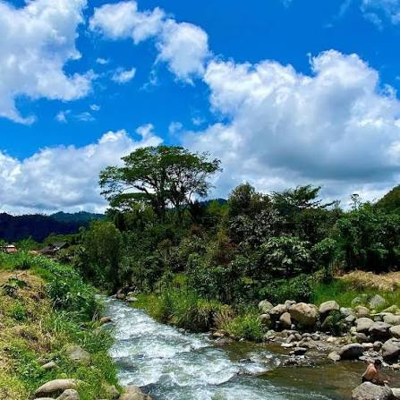
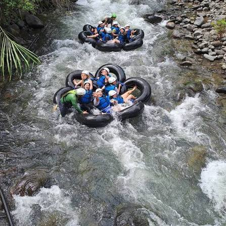

Descripción
El Río Mindo es el corazón del pueblo y le da su nombre. Sus aguas cristalinas bajan desde las montañas del bosque nublado, formando pozas naturales ideales para nadar y refrescarse. A lo largo del río hay áreas de descanso, restaurantes y paisajes hermosos que invitan a pasar un día tranquilo en contacto con la naturaleza.
Ubicación Geográfica
Atraviesa el pueblo de Mindo de oeste a este. Sus aguas provienen del Bosque Protector Mindo-Nambillo y desembocan en el Río Pachijal.
Actividades para realizar
- Natación en pozas naturales de agua fresca y cristalina
- Paseos tranquilos por las orillas del río
- Comer en los restaurantes y cabañas cercanas
- Relajarse y disfrutar del sonido del agua y el bosque
- Picnics familiares bajo los árboles
Galería de Imágenes


